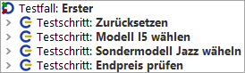
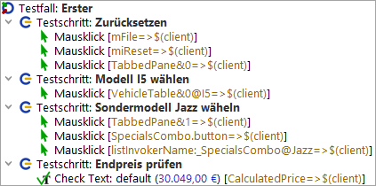
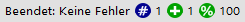

| Version 6.0.3 |
Als nächstes wollen wir einen Blick auf den ersten Testfall werfen. Er besteht aus vier Testschritten:
|
|  | ||
|
| Abbildung 1.6: Der "Erste" Testfallknoten | ||
Testschritte sind oft hilfreich, um einen Testfalls zu strukturieren und dadurch lesbar und verständlicher zu gestalten. Dies erleichtert später eine eventuelle Fehlersuche oder Anpassungen des Testfalls.
|
|  | ||
|
| Abbildung 1.7: Die Details des ersten Testfalls | ||
Sie sehen diverse Mausklicks sowie einen Check. Zur besseren Lesbarkeit des Testfalls wurden sie mittels Testschrittknoten strukturiert. Neben der Aktionsart (Mausklick, Check) wird angezeigt, auf welche Anwendungskomponente sich die Aktion bezieht, also wohin z.B. der Mausklick geht. Diese Knoten können direkt über die Aufnahmefunktion von QF-Test erzeugt werden. Näheres hierzu erfahren Sie im nächsten Kapitel Erstellen einer eigenen Testsuite (Java).
Wir wollen uns nun die Ausführung des ersten Testfalls anschauen.
Die Testschritte werden nun der Reihe nach abgespielt, wobei dies typischerweise ziemlich rasch passiert.
Das aktuelle Testergebnis wird während und nach dem Testlauf in der Statuszeile am unteren rechten Rand des QF-Test Hauptfensters angezeigt und sollte "Beendet: Keine Fehler" lauten. Daneben zeigt QF-Test verschiedene Zähler an. Der erste Zähler bezieht sich auf die Anzahl der ausgeführten Testfälle, der zweite auf die Zahl der ausgeführten Testfälle ohne Fehler. In unserem Fall wurde ein Testfall fehlerfrei ausgeführt, was einer Erfolgsquote von 100% entspricht.
|
|  | ||
|
| Abbildung 1.8: Die Ergebnisanzeige in der Statusleiste | ||
Wenn Sie den Mauszeiger auf dem Symbol eines Testfallzählers ruhen lassen, wird Ihnen eine entsprechende Beschreibung angezeigt. Eine Auflistung aller Testfallzähler finden Sie im Kapitel Aufnahme und Wiedergabe des Handbuchs.
| Letzte Änderung: 6.9.2022 Copyright © 2002-2022 Quality First Software GmbH |